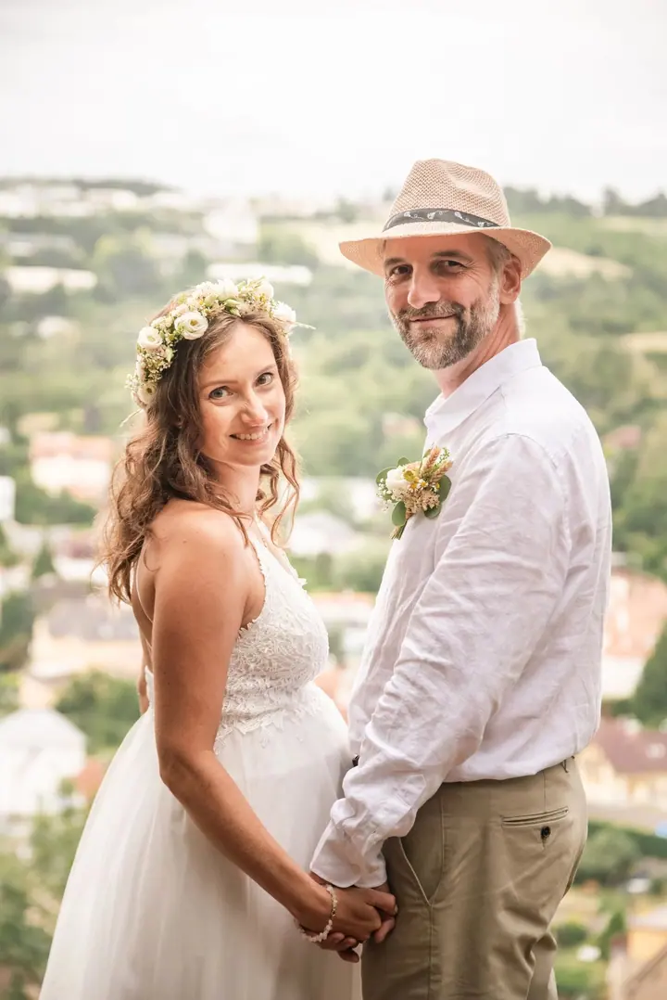
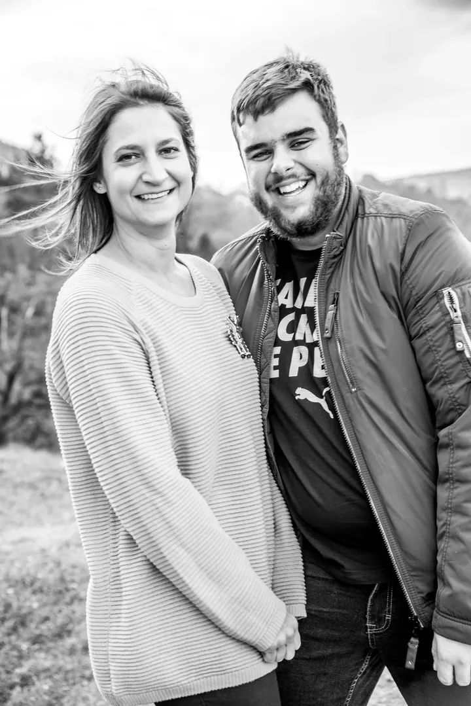
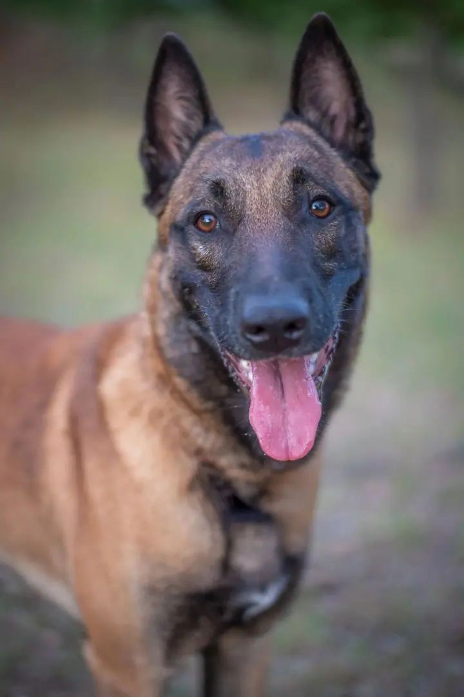
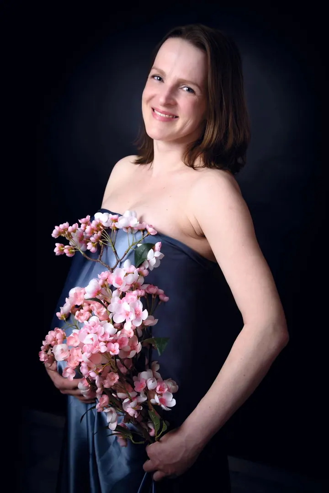
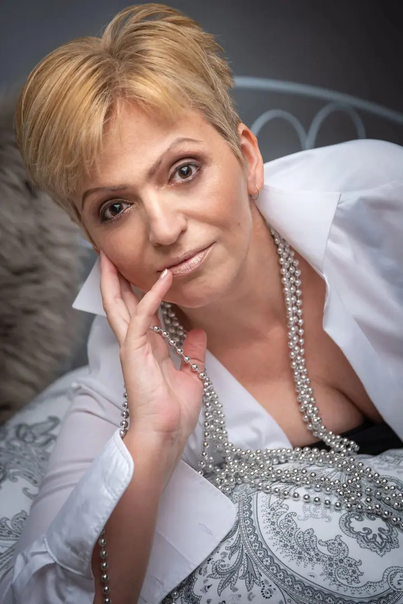
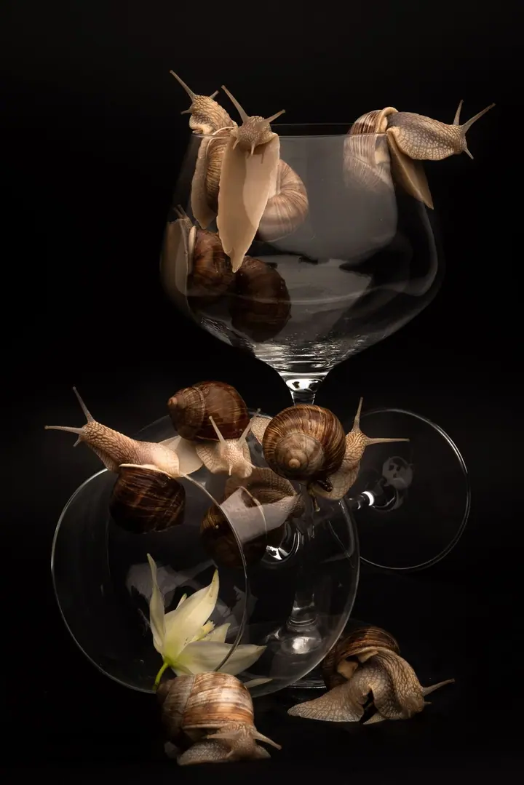
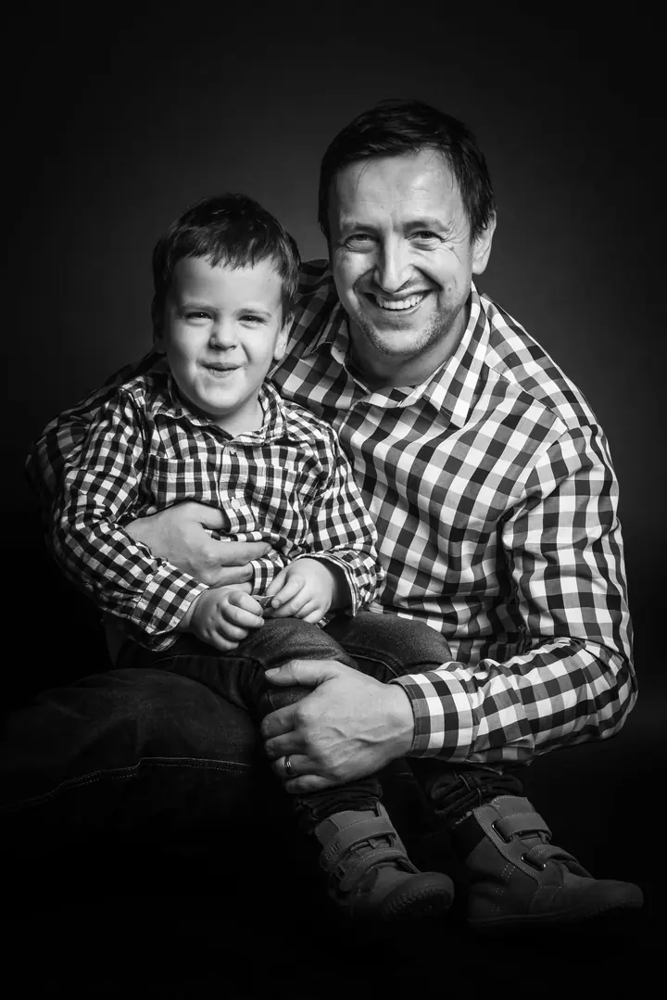
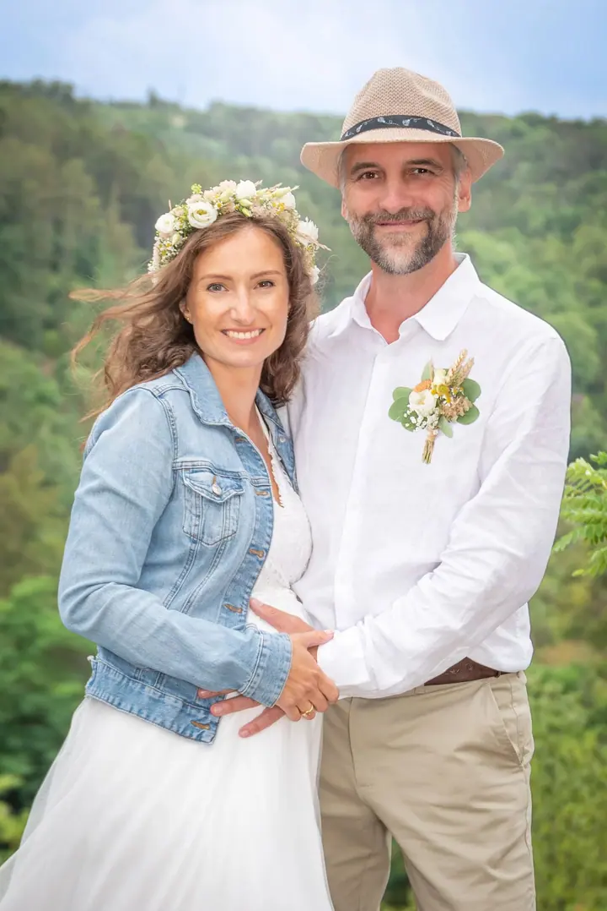

01 / 04
Rodinné focení
Rodinné fotografie v interiéru i venku, klidně i s babičkou a dědečkem. Jedna hezká společná fotka celé rodiny, kterou si můžete pověsit ve velkém formátu nebo nechat vytisknout na plátno.
Zeptat se na termín→







Nejen jak vypadáte, ale kdo jste
Zeptat se na termín →(01) Ahoj
Jmenuji se Jana Rotterová a pod značkou RotArt fotím rodiny , svatby i portréty v Berouně a okolí. Fotku jsem vystudovala a věnuji se jí víc než deset let. Fotím venku, u vás doma, ve firmě i v ateliéru.
(02) Co fotím
01 / 04
Rodinné fotografie v interiéru i venku, klidně i s babičkou a dědečkem. Jedna hezká společná fotka celé rodiny, kterou si můžete pověsit ve velkém formátu nebo nechat vytisknout na plátno.
Zeptat se na termín→02 / 04
Na svatbách se dojímám spolu s vámi. Fotím s citem a s respektem k vašim přáním a soukromí.
Zeptat se na termín→03 / 04
Profesní portrét do životopisu, nová profilovka, ženský nebo mužský portrét. Dělám i průkazové fotky, na kterých nevypadáte „jako z úřadu“.
Zeptat se na termín→Dále nabízím
Velkoformátové produktové fotky pro e-shop, aranžmá i momentky na sociální sítě. Klidně si zalezu na půl dne do ateliéru a zkoumám, jak produkty nasvítit co nejlépe.
↗(04) Postup
Od první zprávy po hotovou galerii.
Krok 1 z 4
Než začneme fotit, probereme vaše požadavky. Domluvíme se na místě, stylu a detailech, aby fotky odpovídaly tomu, co si představujete.
Krok 2 z 4
Připravím všechno potřebné pro hladký průběh: rekvizity, dekorace i doplňky. Když je potřeba, zařídím ateliér.
Krok 3 z 4
Fotíme v klidu a v příjemné atmosféře, v ateliéru, u vás doma nebo na místě, které si vyberete. Ráda vás rozesměju, protože o přirozené emoce jde především.
Krok 4 z 4
Fotky pečlivě retušuji, aby vyniklo to, co vyniknout má. Pokud chcete, zařídím i tisk v různých formátech nebo fotoobraz na zeď.
Výsledná fotka vám má lichotit
(05) Za objektivem
Pro mě není každý klient jen model nebo modelka, ale především člověk. Vidím krásu nejen na povrchu, ale hlavně tu vnitřní, schovanou v gestech, v úsměvu a v srdci. Vím, že stát před objektivem není jednoduché, a proto ke každému z vás přistupuji individuálně a citlivě.
Miluji práci s dětmi a zvířaty. Při ní se mi hodí dlouholeté zkušenosti z práce vychovatelky, takže i z focení dětí, které doma neposedí, bývá hra a velká legrace. Na svatbách se dojímám, a stejně ráda strávím půl dne v ateliéru s hromadou produktů.
Spolupracuji i s obcemi, školami a firmami. Fotím školní a firemní portréty, vítání občánků a slavnosti, kde umím postavit i fotokoutek. Fotky pečlivě retušuji, opravuji staré poškozené snímky, zařídím tisk a fotografii také vyučuji. Fotím tak dlouho, dokud se spolu neshodneme, že výsledek je prostě pecka.
Jana
Jana Rotterová · Rodinná, svatební a portrétní fotografka
Většinou venku, ale ráda přijedu i k vám domů nebo do firmy. Když je to potřeba, zařídím fotostudio. Působím hlavně v Berouně a okolí, ale dojedu i kamkoliv jinam.
Ano, práci s dětmi miluji. Focení pojímám jako hru a díky zkušenostem z práce vychovatelky si s dětmi rychle porozumím. Rodiče bývají překvapení, jak jejich prckové v ateliéru pózují.
Ano. Fotím v budově nádraží Beroun–Závodí (set fotek za 250 Kč, je potřeba se objednat), nebo přijedu k vám domů. Domácí focení v Berouně a Králově Dvoře stojí 450 Kč.
Ano. Fotím školní a firemní portréty, reportáže z vítání občánků a dalších slavností a na akce umím postavit i fotokoutek.
(07) Kontakt
Napište pár vět o tom, co si představujete, a termín, který se vám hodí.